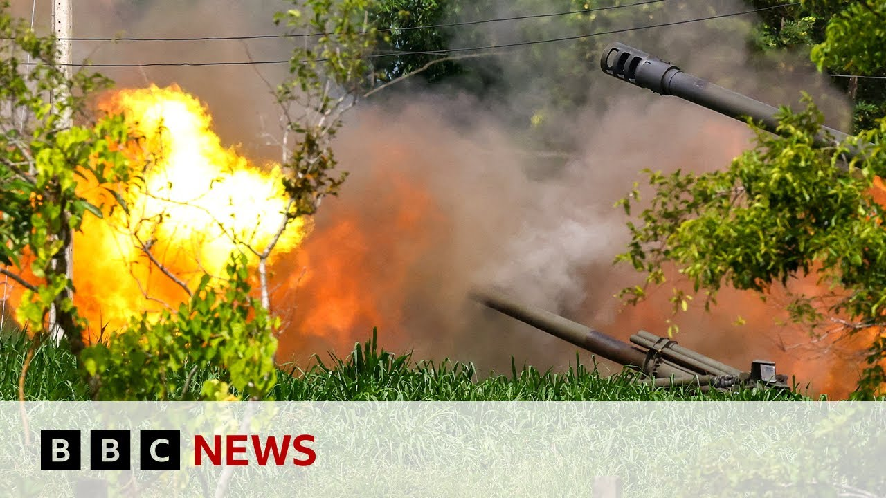

【BBC News 20250727 柬埔寨呼吁与泰国立即停火，边境冲突持续升级引发战争担忧】
Summary: Cambodia urges an immediate ceasefire with Thailand amid ongoing cross-border clashes, escalating fears of war, as both sides deploy heavy weapons following a violent border dispute. Thailand has evacuated over 130,000 civilians and imposed martial law in border regions.
摘要： 柬埔寨呼吁与泰国立即停火，边境冲突持续升级引发战争担忧，双方在长期边境争端爆发后动用重型武器。泰国已疏散13万多名平民并在边境地区实施戒严。

⏱️ Estimated Reading Time: 8 min.
📚 四级生词 📚 六级生词 📚 雅思生词 📚 托福生词 📚 专八生词 📚 SAT生词 📚 考研生词 📚 GRE生词 📚 高考生词 📚 其它生词
Cambodia has called for an immediate ceasefire with Thailand as crossber fighting is continuing for a third day, raising fears of a full-blown war.
柬埔寨呼吁与泰国立即停火，边境交火进入第三天，引发全面战争担忧。
Both countries have been using heavy weapons after a long-running border dispute turned violent on Thursday.
两国在长期边境争端于周四演变为暴力冲突后动用重型武器。
Thailand has evacuated more than 130,000 civilians and declared martial law in some border areas.
泰国已疏散超过13万平民并在部分边境地区实施戒严。
Jonathan Hed reports from the Thai Cambodian border.
乔纳森·赫德在泰柬边境报道。
For a second day, the guns boomed across the Thai Cambodian border.
泰柬边境的炮火声已持续第二天。
This is a Thai artillery unit.
这是一支泰国炮兵部队。
They kept this up until nightfall.
他们持续开火直至夜幕降临。
A long stretch of territory on the border has now been emptied.
边境大片区域现已空无一人。
On a 1-hour drive, we hardly saw a soul.
驱车一小时途中几乎未见人影。
But in among the trees, in schools, and temples, there are now thousands of Thai soldiers.
但在树林、学校和寺庙中驻扎着数千名泰国士兵。
Though in this village, a handful of men had stayed behind, worried about what would happen to their houses.
尽管这个村庄仍有少数男子留守，担心房屋安危。
And nearly all the villages right along this border for hundreds of kilometers have been evacuated.
沿边境数百公里内几乎所有村庄都已撤离。
But for those who've chosen to stay to look after their homes or their livestock, these rudimentary shelters have been built to protect them from Cambodian rockets.
为选择留守照看家园或牲畜的居民搭建了简易掩体以躲避柬埔寨火箭弹。
And there have been almost constant artillery exchanges throughout the morning, both outgoing from here and coming back from the other side.
整个上午几乎持续进行炮火互射，双方均有交火。
Their families have been moved far from the shells and rockets.
他们的家人已被转移至远离炮火的安全地带。
This is a sports complex in the city of Surin.
这是素林市的一处体育中心。
It's just a roof over their heads and a sleeping mat on the floor, but the Thai authorities are running a slick relief operation with plenty of food and water and even a designated area for evacuated pets.
虽仅有屋顶和地铺，但泰国当局高效开展救援，提供充足食物饮水，甚至设有宠物安置区。
But it has been a traumatic experience.
但这仍是创伤性经历。
We heard the loud bangs, so we gathered all our important belongings, said Joy.
"我们听到爆炸声就收拾了重要物品，"乔伊说。
We had to wait so long for a ride to safety as all the cars leaving our village were full.
"因离村车辆满载，我们苦等许久才获救。"
Now all they can do is wait for the guns to be silenced by diplomacy so they can go home.
如今他们只能等待外交手段平息战火以重返家园。
Jonathan Head, BBC News on the Thai Cambodian border.
BBC新闻乔纳森·赫德于泰柬边境报道。
Well, Jonathan is still near to the border.
乔纳森仍在边境附近。
I asked him if there had been any reaction from Thailand after the ceasefire call from Cambodia's ambassador at the United Nations.
我询问他柬埔寨驻联合国大使呼吁停火后泰方有何反应。
Thailand didn't explicitly reject it, but it hasn't accepted it either.
泰国未明确拒绝但也未接受。
And what we're hearing from the Thai military and from elements in the government is that this is still an ongoing military operation.
从泰军方和政府人士处获悉，军事行动仍在继续。
They have objectives.
他们有其目标。
Now, you can see where I am now.
现在您能看到我所处位置。
This is a completely deserted marketplace.
这是完全荒废的市场。
This entire area is still completely evacuated along a very long stretch of border.
整个边境沿线区域仍全面撤离。
Um it's very eerie here, but we were here yesterday and while we were here, we could hear absolutely constant thundering artillery um from Thai got big guns that were ranged right along the road.
此地阴森异常，但昨日我们在此听到泰国沿路部署的重炮持续轰鸣。
I'm going to move around here so you can see the road behind me.
我将移动让您看到身后道路。
There's almost no traffic on it now at all, though.
但如今路上几乎无车通行。
Very few people are coming back.
极少人返回。
Those guns were positioned for a very long way along the road, firing that way into Cambodia, which is about uh five, six miles away.
这些火炮沿路长距离部署，向约五六英里外的柬埔寨开火。
And there they it's complete today.
而今日那里完全寂静。
It's completely silent.
毫无声响。
We're not hearing any guns at all.
未闻任何炮声。
So, it's possible they've achieved their objectives.
可能泰方已达成目标。
The ties are saying they've been trying to destroy those Cambodian rocket launchers or at least push them back that caused all the civilian casualties casualties here on Thursday and to hit Cambodian military positions and drive Cambodian troops back from disputed areas.
泰方称其试图摧毁造成周四平民伤亡的柬埔寨火箭发射器，或至少将其击退，并打击柬军事据点使其撤出争议地区。
A couple of temples in this area and they are saying they've achieved that.
该区域几座寺庙周边，泰方宣称已实现目标。
Of course, there is now fighting in another part of the border a long way from here down in the in the southern part most part of their their border where the Thai navy's been involved.
当然，目前战事已转移至远离此处的南部边境，泰海军参与其中。
It says also it's been pushing Cambodian forces back.
泰方称亦在迫使柬军后撤。
So Thailand still feels this is an an unfinished military operation.
因此泰国仍视此为未完成的军事行动。
They have objectives.
他们有其目标。
There's a lot of anger here about the civilian casualties from Cambodia's called for a ceasefire.
民众对柬方造成平民伤亡后呼吁停火深感愤怒。
See seems they are ready to stop.
看似柬方准备停火。
Um at the moment it's quiet here but there isn't any sign of an end to military activity.
目前此地平静但无军事行动终止迹象。
Are we likely to see diplomatic efforts from the other countries in the region?
是否会有地区其他国家外交斡旋？
I think we are and we've already seen some.
我认为会有且已有动向。
The Malaysian Prime Minister Anwa Ibrahim has called his Thai counterpart offering to help, you know, calling for peace.
马来西亚总理安华·易卜拉欣已致电泰方领导人提议协助促和。
The ties have very politely responded thanking him for his offer, but saying at this stage they do not need any third party intervention.
泰方礼貌回应感谢提议，但表示现阶段无需第三方调停。
But I think that pressure will keep up.
但我认为施压将持续。
Um this is a region in Southeast Asia which prides itself on being peaceful and prosperous in benefiting from global trade and the the members of the association of Southeast Asian nations usually scrupulously avoid anything get any conflicts getting out of hand in between between them.
东南亚地区以和平繁荣自豪，受益于全球贸易，东盟成员国通常谨慎避免内部冲突失控。
So this is very uncomfortable for this region and the other countries in the region will be putting pressure on them.
因此此事令地区不安，周边国家将施加压力。
But the mood is still very very um very tough here in Thailand very indignant about what happened.
但泰国国内情绪仍非常强硬，对事件极为愤慨。
Remember that Cambodian rocket attack that came over and hit all the hit these shops and hospitals was quite unexpected on Thursday.
需知周四柬埔寨火箭弹袭击商铺医院实属意外。
It was a real escalation and the ties feel that has not been properly accounted for yet.
此系严重升级，泰方认为柬方尚未妥善交代。
Of course on the Cambodian side they are also so now listing casualties, people who've been hurt, places that have been destroyed by all that Thai artillery and some aerial bombardments too that have come from this side.
当然柬方也在统计伤亡人员及被泰方炮火和空袭摧毁的场所。